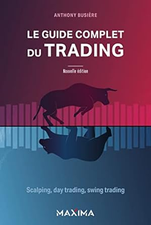

Le guide complet du trading
Écrit par : Anthony Busiere
Publié le : 25 janvier 2023
Numéro ISBN13 : 978-2818811597
Nombre de page : 560
Langue : Français
Résumé :
Vous souhaitez intervenir de manière active sur les marchés financiers ?
Cet ouvrage regroupe et explique toutes les connaissances dont vous avez besoin pour vous lancer facilement :
Les principes fondamentaux de l’économie, pour comprendre les mouvements de marché mais aussi leur analyse par des professionnels
et des médias spécialisés.
Les principes de l’analyse technique, qui vous permettront d’interpréter les variations de prix à l’aide de figures chartistes
(qui traduisent la psychologie des intervenants) et d’indicateurs et d’oscillateurs techniques pouvant être utilisés de manière
exclusive ou conjointe à l’économie fondamentale.
Le money management, pour maîtriser la gestion d’un compte de trading actif sans le mettre en danger.
Les différents modes de trading selon le temps dont vous disposez : règles de base du swing trading, du day trading et du
scalping, méthodes d’entrée et de sortie de position, backtesting, trading virtuel...
Les spécificités de chaque type d’actifs : CFD, actions, FOREX.
Illustré de nombreux graphiques pour faciliter la compréhension de toutes les notions, principes et techniques abordés, cet
ouvrage se révélera vite votre allié indispensable pour pratiquer un trading actif et sécurisé.